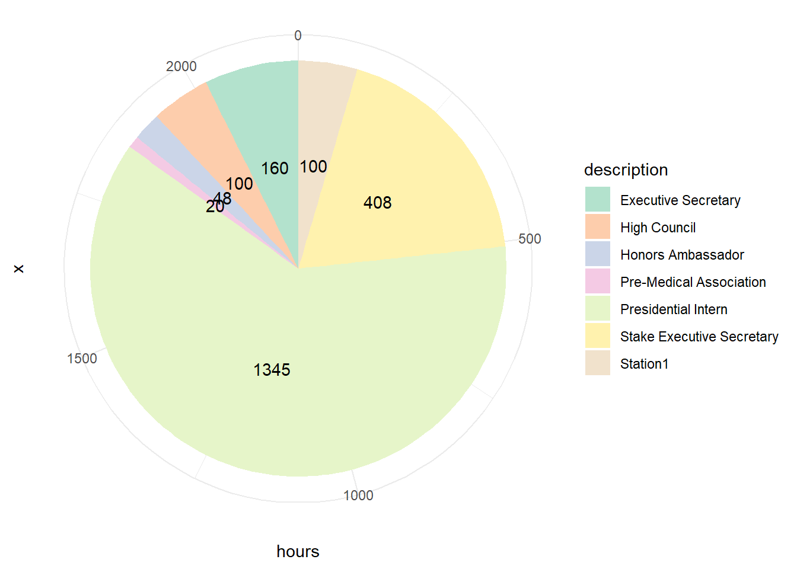

Leadership
Pie Chart
As of June 22, 2023, I have spent 2181 hours in leadership capabilities.
Ward Executive Secretary
Description
In my church community, a Bishop is seen in a similar role as a Pastor, the head of the congregation. I was asked to be the “Executive Secretary” for the Bishop, helping him as he ran the congregation (or “Ward”). Duties included preparing agendas, attending multiple meetings throughout the week, schedule appointments, and keeping lists of congregation members. My goal was to do everything on the back end to make the life of the Bishop easier. For more information, see this website. I was involved in this position for 4 months, putting in 10 hours a week to this service.
Learning
This position helped me understand better how to interact with people, particularly when sensitive information was being discussed. One of the main teachings of my church is that God loves everyone, and I had the opportunity to work with other members of the congregation that taught me how to better share that love with others. The Bishop was a very busy guy, so I also had to increase my organization skills to make sure that everything was taken care of for him.
High Council
Description
Again, in my church community, a group of congregations in an area is called a Stake (similar to a Catholic diocese). There are leaders in the Stake that help all of the congregations in the area. I served on the High Council in the Stake, helping be the hands of the Stake President (similar to a Catholic bishop). I was assigned to a congregation and was responsible to learn their needs, offer support, teach and train when necessary, and communicate important information. A lot of my time was spent dealing with leaders in the individual congregations. In addition to our assignment to specific congregations, I was put in charge of the physical facilities in the Stake where the congregations met. For more information, follow this link. I was in this position for 5 months, putting 5 hours a week into this service.
Learning
This assignment pulled me right out of my comfort zone. Before this, I was typically very comfortable being in the background of events, but this assignment required me to be an extroverted type of leader. It helped me learn how to present myself to hundreds of people in a responsible and kind way. I also learned how to be better organized, as assignments often traded around. This caused me to have to keep a good handle on everything else happening in the Stake. This experience helped me change my leadership style into one that focused on the individual in the group of people.
Stake Executive Secretary
Description
This was another position I served in my church community. Similar to the Ward Executive Secretary, my position with the Stake Executive Secretary was to work with the Stake President and his presidency to assist them in running the Stake. Responsibilities include creating agendas for meetings, serve as members of councils for the stake, coordinate business in the stake, schedule appointments, and train new ward executive secretaries in their positions. For more information, follow this link.This is my current assignment. I have been involved here for 2.5 months, and I put in 12 hours a week in this service.
Learning
This position came at a really tough time for me. I have been working as a Presidential Intern, going to school full time, and studying for the MCAT. Overall, I would say I have learned the most about my personal way to manage time. There is a lot on my plate, and I needed to find out quickly how to juggle it all at once. This has made me a better organized person. Also, managing the schedule for the Stake Presidency requires me to work with the members of the stake extensively. This helps me better treat people one by one, providing them the same love and care that I would hope is provided to me.
Honors Program Ambassador
Description
“The Honors Ambassadors is an established committee of UVU Honors students who, along with the Steering Committee, help govern the Program. As student representatives, they act as advocates to their fellow Honors students when problems and questions arise concerning the Program itself, or from their interaction with professors, Honors Program Coordinators, and other students. The Honors Ambassadors work directly with Honors Program Director and student information is kept confidential (Source).” I put roughly 6 hours a month into this position, and I have been involved here for 3 months.
Learning
In this position, I work primarily with underclassmen. This has taught me how to empathize in a more effective way. These students are awfully overwhelmed as they first come to college, and I am often one of their only student contacts they can lean on. I feel that I have learned how to better address a need in other people, whatever that need may be, and I have worked with the person to identify modes to resolve that need. Also, again, this required me to step out of my comfort zone and be more extroverted, and I feel like that is something that I always need to improve on.
Pre-Medical Association
Description
One of the clubs at Utah Valley University is the Pre-Medical Association. For a couple of years, I served as the Social Media Content Advisor. My job was simple; as events came up, I was responsible for creating fliers that could be posted online to inform the members of the club. More information can be found here. I was involved with this position for 15 months, working roughly 1 hour per month on this.
Learning
The most influential thing I learned from this experience was through my interactions with other students who had similar goals I had. They taught me how to be a better doctor in the future, and together we created a cohort of people to support each of us on our path. I learned how to be a better member of a team and a cohort.
Presidential Intern
Description
“UVU’s Presidential Internship Program is a prestigious internship housed in the Office of the President Astrid Tuminez, aiming to provide students from diverse backgrounds the opportunity to learn from and collaborate with UVU’s executive leadership team. Each intern will work directly with a member of UVU’s cabinet to create and implement high impact projects on behalf of UVU’s leadership and the university as a whole. Through working alongside cabinet, students will gain a greater knowledge of UVU’s mission, core values, and an inside look at higher education. Students will gain knowledge and skills that will enrich their academic, professional, and personal experiences (Source).” I had the opportunity to work with Provost Wayne Vaught in his management of Academic Affairs. I work 28 hours a week in this position, and I have worked here for roughly 4 months.
Learning
This Internship has been career changing. The thing I have learned the most so far in this internship is the ability to be professional in nature. Our cohort of interns have met some very influential and “important” people both at our university as well as in the community. This was awfully intimidating at first, but I have had great growth in that area. I have had many opportunities where I am part of a cohort of 13 that represent the student body of our university, and I have learned to not take that responsibility lightly. Overall, I feel that I am more prepared to work in a professional, executive world. These influential people have taught me so much, and I am excited to continue learning from them as the internship continues.
Station1
Description
One of the aspects of the Fellowship I loved most occurred as we learned to “engage with a shared curriculum focused on socially-directed science and technology which draws together critical perspectives on history, social studies of science and technology, equity and inclusion, computation in a social context, social change and innovation, sustainability, and ethical reasoning (Source).” These leadership skills helped change my perspective regarding the intersection of science and technology in the future. I was involved with this for 3 months, giving roughly 33 hours a month towards leadership.
Learning
Being a Fellow in this program taught me how to be a better part of a team, particularly in a virtual nature. The idea of science and technology being socially-directed taught me the importance of making and maintaining relationships. This helped me become a better leader because I put a higher value on my relationships.